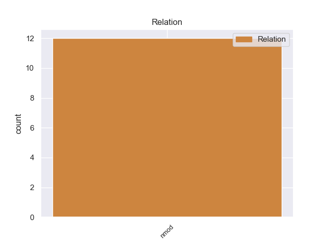
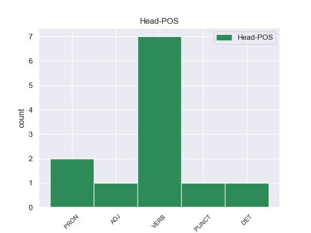
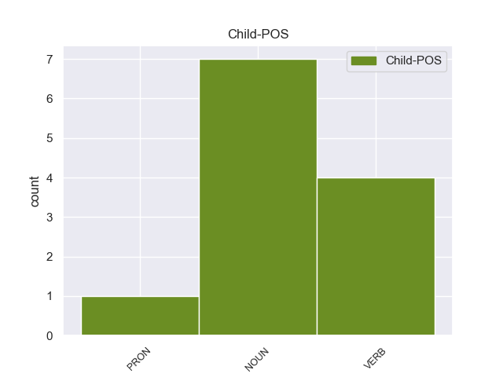

Distribution of features within this leaf



Agreement Rules sorted by frequency.
- When the dependent token is the nominal modifier(nmod) of the head token, and the head token is VERB
1 Ο _ _ _ _ 0 _ _ _
2 δημοσιογράφος _ _ _ _ 0 _ _ _
3 , _ _ _ _ 0 _ _ _
4 ο _ _ _ _ 0 _ _ _
5 οποίος _ _ _ _ 0 _ _ _
6 έγραφε έγραφε VERB _ Case=Acc|Gender=Fem|Number=Sing 0 _ _ _
7 τις _ _ _ _ 0 _ _ _
8 ομιλίες _ _ _ _ 0 _ _ _
9 του _ _ _ _ 0 _ _ _
10 Χάουμε _ _ _ _ 0 _ _ _
11 Μάτας _ _ _ _ 0 _ _ _
12 και _ _ _ _ 0 _ _ _
13 έπλεκε _ _ _ _ 0 _ _ _
14 το _ _ _ _ 0 _ _ _
15 εγκώμιο _ _ _ _ 0 _ _ _
16 του _ _ _ _ 0 _ _ _
17 τελευταίου _ _ _ _ 0 _ _ _
18 , _ _ _ _ 0 _ _ _
19 καταδικάστηκε _ _ _ _ 0 _ _ _
20 σε _ _ _ _ 0 _ _ _
21 κάθειρξη κάθειρξη NOUN _ Case=Acc|Gender=Fem|Number=Sing 6 nmod _ _
22 τριών _ _ _ _ 0 _ _ _
23 ετών _ _ _ _ 0 _ _ _
24 και _ _ _ _ 0 _ _ _
25 εννέα _ _ _ _ 0 _ _ _
26 μηνών _ _ _ _ 0 _ _ _
27 . _ _ _ _ 0 _ _ _
1 Σ _ _ _ _ 0 _ _ _
2 το _ _ _ _ 0 _ _ _
3 Κάστρο _ _ _ _ 0 _ _ _
4 μπορείτε _ _ _ _ 0 _ _ _
5 να _ _ _ _ 0 _ _ _
6 φτάσετε _ _ _ _ 0 _ _ _
7 πολύ _ _ _ _ 0 _ _ _
8 εύκολα _ _ _ _ 0 _ _ _
9 με _ _ _ _ 0 _ _ _
10 κάποιο κάποιος PRON PRON Case=Acc|Gender=Neut|Number=Sing|Person=3|PronType=Ind 0 _ _ _
11 από _ _ _ _ 0 _ _ _
12 τα _ _ _ _ 0 _ _ _
13 καΐκια καΐκι NOUN NOUN Case=Acc|Gender=Neut|Number=Plur 10 nmod _ _
14 που _ _ _ _ 0 _ _ _
15 ξεκινούν _ _ _ _ 0 _ _ _
16 κάθε _ _ _ _ 0 _ _ _
17 μέρα _ _ _ _ 0 _ _ _
18 από _ _ _ _ 0 _ _ _
19 το _ _ _ _ 0 _ _ _
20 λιμάνι _ _ _ _ 0 _ _ _
21 της _ _ _ _ 0 _ _ _
22 Σκιάθου _ _ _ _ 0 _ _ _
23 . _ _ _ _ 0 _ _ _
1 Η _ _ _ _ 0 _ _ _
2 έρευνα έρευνα ADJ _ Case=Acc|Gender=Fem|Number=Sing 0 _ _ _
3 της _ _ _ _ 0 _ _ _
4 Ifop _ _ _ _ 0 _ _ _
5 έδειξε _ _ _ _ 0 _ _ _
6 ότι _ _ _ _ 0 _ _ _
7 « _ _ _ _ 0 _ _ _
8 το _ _ _ _ 0 _ _ _
9 μεγαλύτερο _ _ _ _ 0 _ _ _
10 μέρος _ _ _ _ 0 _ _ _
11 των _ _ _ _ 0 _ _ _
12 ηλικιωμένων _ _ _ _ 0 _ _ _
13 θεωρεί _ _ _ _ 0 _ _ _
14 αυξημένη _ _ _ _ 0 _ _ _
15 την _ _ _ _ 0 _ _ _
16 τρομοκρατική _ _ _ _ 0 _ _ _
17 απειλή _ _ _ _ 0 _ _ _
18 , _ _ _ _ 0 _ _ _
19 ενώ _ _ _ _ 0 _ _ _
20 μονάχα _ _ _ _ 0 _ _ _
21 το _ _ _ _ 0 _ _ _
22 5% 5% VERB _ Case=Acc|Gender=Fem|Number=Sing 2 nmod _ _
23 των _ _ _ _ 0 _ _ _
24 ατόμων _ _ _ _ 0 _ _ _
25 ηλικίας _ _ _ _ 0 _ _ _
26 18-24 _ _ _ _ 0 _ _ _
27 ετών _ _ _ _ 0 _ _ _
28 συμφωνεί _ _ _ _ 0 _ _ _
29 μ' _ _ _ _ 0 _ _ _
30 αυτή _ _ _ _ 0 _ _ _
31 την _ _ _ _ 0 _ _ _
32 άποψη _ _ _ _ 0 _ _ _
33 . _ _ _ _ 0 _ _ _
1 Ο _ _ _ _ 0 _ _ _
2 λόγος _ _ _ _ 0 _ _ _
3 γίνεται _ _ _ _ 0 _ _ _
4 για _ _ _ _ 0 _ _ _
5 τους _ _ _ _ 0 _ _ _
6 « _ _ _ _ 0 _ _ _
7 TUI _ _ _ _ 0 _ _ _
8 1-2 _ _ _ _ 0 _ _ _
9 Fly _ _ _ _ 0 _ _ _
10 » _ _ _ _ 0 _ _ _
11 , _ _ _ _ 0 _ _ _
12 « _ _ _ _ 0 _ _ _
13 Thomas _ _ _ _ 0 _ _ _
14 Cook _ _ _ _ 0 _ _ _
15 » _ _ _ _ 0 _ _ _
16 , _ _ _ _ 0 _ _ _
17 « _ _ _ _ 0 _ _ _
18 Neckermann _ _ _ _ 0 _ _ _
19 Reisen reisen PUNCT _ Case=Acc|Gender=Fem|Number=Sing 0 _ _ _
20 » _ _ _ _ 0 _ _ _
21 , _ _ _ _ 0 _ _ _
22 « _ _ _ _ 0 _ _ _
23 ITS _ _ _ _ 0 _ _ _
24 » _ _ _ _ 0 _ _ _
25 και _ _ _ _ 0 _ _ _
26 « _ _ _ _ 0 _ _ _
27 Jahn _ _ _ _ 0 _ _ _
28 Reisen reisen VERB _ Case=Acc|Gender=Fem|Number=Sing 19 nmod _ _
29 » _ _ _ _ 0 _ _ _
30 . _ _ _ _ 0 _ _ _
1 Σύμφωνα _ _ _ _ 0 _ _ _
2 με _ _ _ _ 0 _ _ _
3 τον _ _ _ _ 0 _ _ _
4 αμερικανικό αμερικανιός NOUN _ Case=Acc|Gender=Fem|Number=Sing 5 nmod _ _
5 οργανισμό ργανισμό DET _ Case=Acc|Gender=Fem|Number=Sing 0 _ _ _
6 Heritage _ _ _ _ 0 _ _ _
7 Foundation _ _ _ _ 0 _ _ _
8 : _ _ _ _ 0 _ _ _
No disagree examples found.